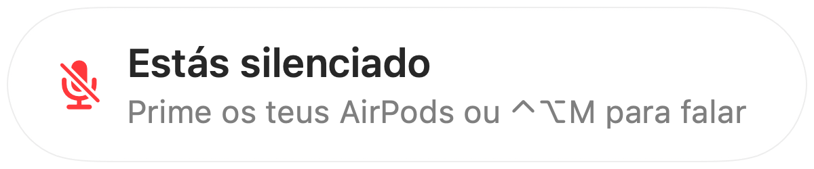

Um aviso de «Estás silenciado» para todas as chamadas
O Zoom avisa quando falas enquanto estás silenciado. A maioria das outras apps não o faz, e as chamadas no browser quase nunca avisam. Explicas algo durante um minuto numa reunião de teletrabalho e só depois reparas que estão todos à espera.
O Muffle deteta a fala enquanto estás silenciado e mostra um aviso, em qualquer app. Quando a chamada utiliza AirPods ou auscultadores, escuta o microfone do próprio Mac e apenas o seu volume. Não é gravado nada.
Ativar o aviso
- 1
Instala o Muffle e permite o acesso ao microfone.
- 2
Certifica-te de que a opção «Avisar quando eu falar silenciado» está ativa nas Definições do Muffle.
- 3
Entra numa chamada com os teus AirPods ou auscultadores e silencia o microfone.
- 4
Começa a falar. Surge o aviso «Estás silenciado».

- Entraste numa reunião ainda com o microfone silenciado da chamada anterior? O Muffle avisa-te logo ao iniciar a chamada.
- Escrever no teclado não ativa o aviso. Apenas a fala contínua o aciona.
Perguntas frequentes
O aviso funciona com o microfone incorporado do Mac?
Funciona quando a chamada utiliza AirPods ou auscultadores. Se a chamada utilizar o microfone do próprio Mac, esse microfone fica silenciado e não consegue ouvir-te.
O meu áudio é gravado?
Não. O Muffle apenas mede o nível de volume e nunca guarda nem envia qualquer áudio.